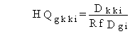
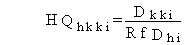

3.3 NONCARCINOGENIC CHEMICAL HEALTH IMPACTS
The health impacts for exposure to noncarcinogenic
chemicals are expressed as a hazard quotient. The hazard quotient is the
ratio of the average daily dose to the reference dose. The reference dose
is defined by the USEPA for many chemicals for ingestion and inhalation
intakes (USEPA 1993). The reference dose represents a level that is believed
to be safe for members of the general population. Exposure at this level
will result in a hazard quotient of 1.0. The hazard quotient for ingestion
pathways is evaluated as follows:

(122)
where
HQgkki = hazard quotient for ingestion pathway kk for noncarcinogenic chemical pollutant i (dimensionless)
Dkki = average daily dose for ingestion pathway kk for noncarcinogenic chemical pollutant i (mg/kg/d)
RfDgi = ingestion reference dose for noncarcinogenic chemical pollutant i (mg/kg/d).
The hazard quotient for inhalation pathways can be written similarly, as follows:

(123)
where
HQhkki = hazard quotient for inhalation pathway kk for noncarcinogenic chemical pollutant i (dimensionless)
Dkki = average daily dose for inhalation pathway kk for noncarcinogenic chemical pollutant i (mg/kg/d)
RfDhi = inhalation reference dose for noncarcinogenic chemical pollutant i (mg/kg/d).
Dermal exposures are treated as equivalent ingestion exposures as described in Subsections 2.2, 2.11, 2.12, and 2.15.
When hazard quotient values are added across exposure pathways or pollutants, the resulting sum is referred to as a hazard index.